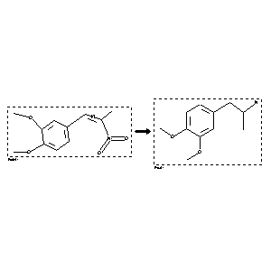

 |
| FA | RX(1); FLST(1); RX(1) |
Reaction (1 of 1)
| Reaction ID | 2153717 |
| Reactant BRN | 2563574 |
| Reactant | 3,4-dimethoxy-b-methyl-b-nitrostyrene |
| Product BRN | 1639698 |
| Product | 2-(3,4-dimethoxy-phenyl)-1-methyl-ethylamine |
| No. of Reaction Details | 1 |
Reaction Details (1 of 1)
| Reaction Classification | Preparation |
| Reagent | LAH |
| Citation Pointer | 5577191; Journal; Rastogi, Shri Niwas; Kansal, V. K.; Bhaduri, A. P.; IJSBDB; Indian J.Chem.Sect.B; EN; 22; 3; 1983; 234-237; |
Reference (1 of 1)
| Citation Number | 5577191 |
| Document Type | Journal |
| Authors | Rastogi, Shri Niwas; Kansal, V. K.; Bhaduri, A. P. |
| CODEN | IJSBDB |
| Journal Title | Indian J.Chem.Sect.B |
| Language Code | EN |
| (Series) Volume | 22 |
| Number | 3 |
| Publication Year | 1983 |
| Page | 234-237 |